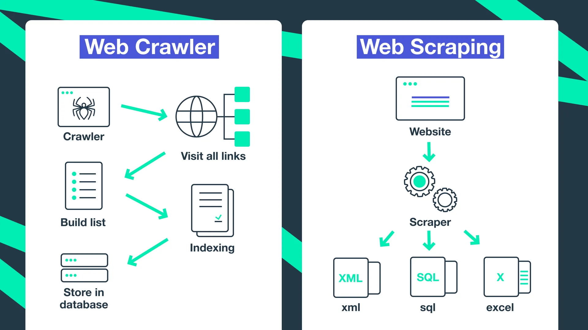

Data crawling, often referred to as web crawling, is the automated
process of systematically browsing and collecting information from the
internet. Utilizing specialized programs known as crawlers or spiders,
data crawling enables the extraction of vast amounts of data from
websites for various purposes. While data crawling is a powerful tool
for collecting information, it's crucial to conduct it responsibly,
respecting both legal frameworks and ethical norms to maintain the
integrity of data collection practices.
-
Monitor Competitor Activities: Systematically extract
data from competitor websites to track pricing strategies, product
offerings, and promotional campaigns. This insight allows businesses
to adapt and stay competitive
-
Analyze Market Trends: Aggregate data from diverse
online sources to identify emerging trends, consumer preferences, and
potential market gaps, aiding in strategic planning and product
development.
-
Real-Time Data Access: Continuous crawling provides
up-to-date information, enabling businesses to make informed decisions
promptly.
-
Data Aggregation: Combine data from multiple online
platforms to gain a comprehensive view of the market, facilitating
better analysis and reporting.
-
Identify Market Gaps: Analyze competitor products and
customer feedback to uncover unmet needs and opportunities for new
product development.
-
Monitor Industry Innovations: Keep track of
technological advancements and industry shifts to inform product
design and feature enhancements.
-
Automated Data Collection: Reduce the need for manual
data entry by automating the extraction of information from various
online sources, saving time and resources.
-
Scalability: Easily scale data collection efforts to
cover a broader range of sources without proportional increases in
cost or labor.